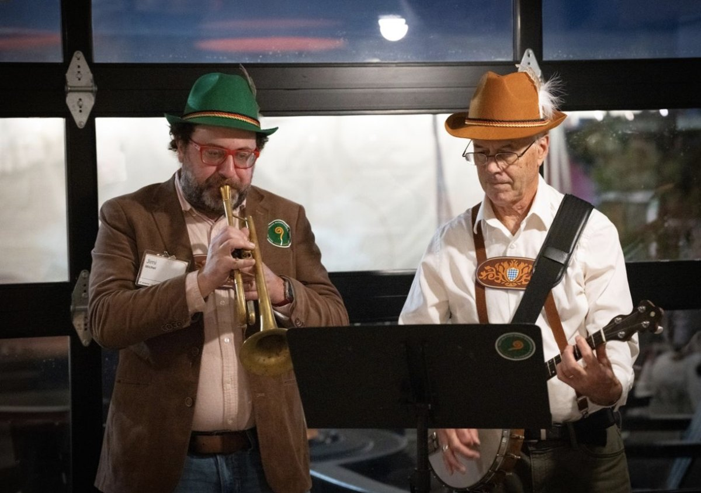
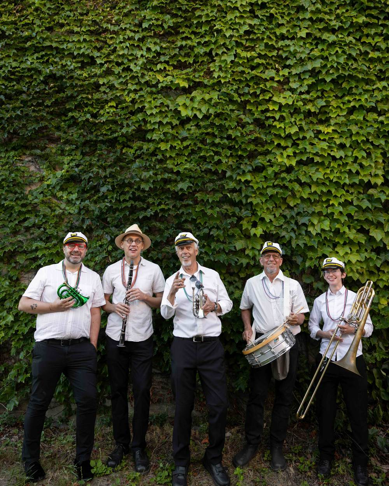
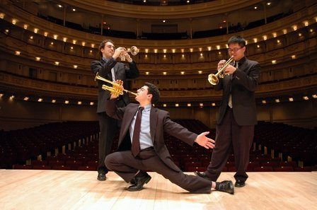
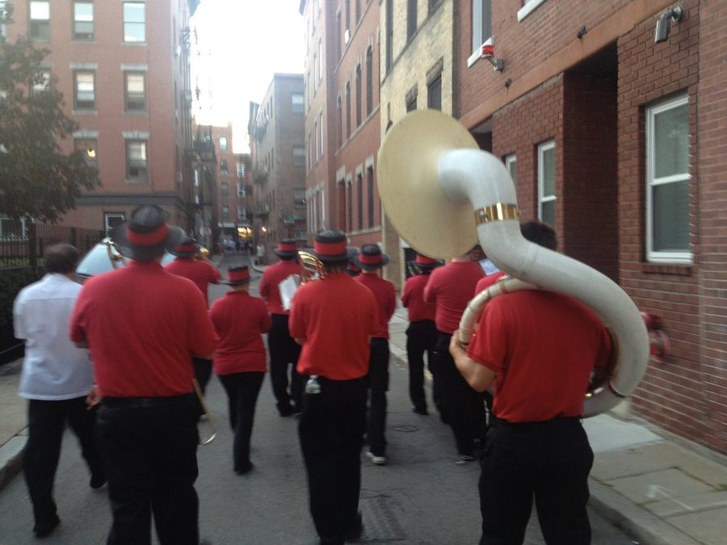
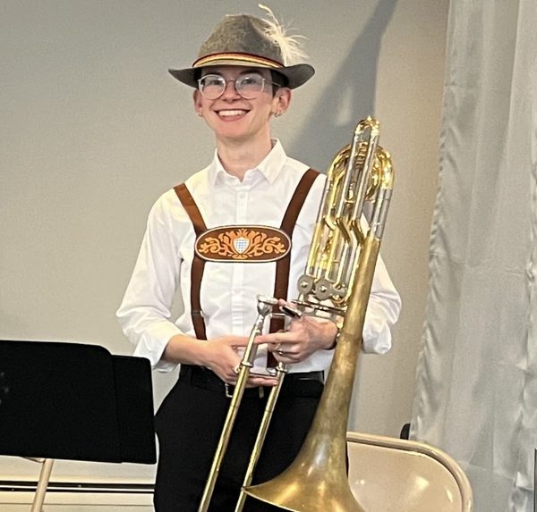
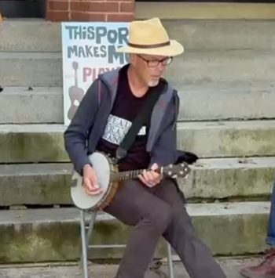

OompahME
Our flagship band for beer gardens, festivals and anywhere that needs a joyful, roving sound.
Ideal for: Oktoberfest, fairs, parties
We’re a group of musicians who met playing jazz, dove into polka, and can now play just about anything you want. We take the music seriously, and we have a great time playing it.

We’re good musicians who really dive into whatever we’re playing. We started out with jazz and polka, but each of us is talented and versatile well beyond that. And if the core five can’t cover it, we have a wide network of musicians who can help.

Our flagship band for beer gardens, festivals and anywhere that needs a joyful, roving sound.
Ideal for: Oktoberfest, fairs, parties

Refined processionals and preludes, from a single trumpet to a small chamber group, tailored to your venue and program.
Ideal for: Weddings, memorials, galas

Need a jazz combo for cocktail hour or a holiday brass quartet? We assemble Portland’s finest freelancers and handle every logistic.
Ideal for: Corporate & private events
A sampling of our most-requested tunes. Ask about the full catalog or a special request.
Trumpet · Leader
Former Principal Trumpet of the New York String Orchestra and 20-year veteran of Boston’s North End Italian Band. Faculty, Portland Conservatory of Music; NEC graduate.

Trombone
Also performs with the Ideal Maine Social Aid and Sanctuary Band and the Casco Bay Wind Symphony.

Banjo · Pocket Trumpet · Co-leader
Berklee graduate, longtime music teacher at Waynflete School, and music director of the ISLANDBEATS steel band.
Drums
A lifelong student of music, equally at home in the studio or on stage across many genres and styles.
Clarinet
Also performs with the Ideal Maine Social Aid and Sanctuary Band.
Tell us the date, the place and the occasion, and we’ll recommend the right ensemble. We’re based in Portland and happy to meet for coffee anywhere near Deering Center.
Or call 207-819-1358